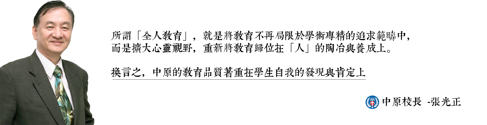
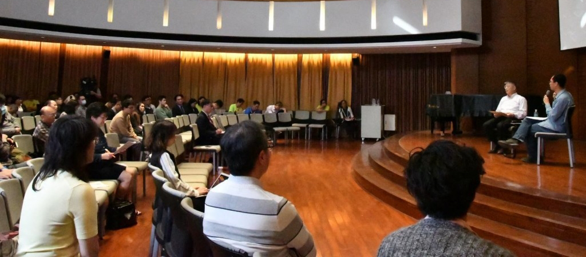
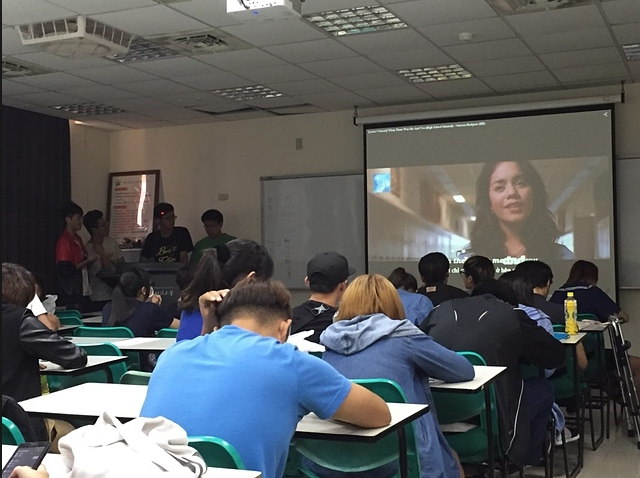
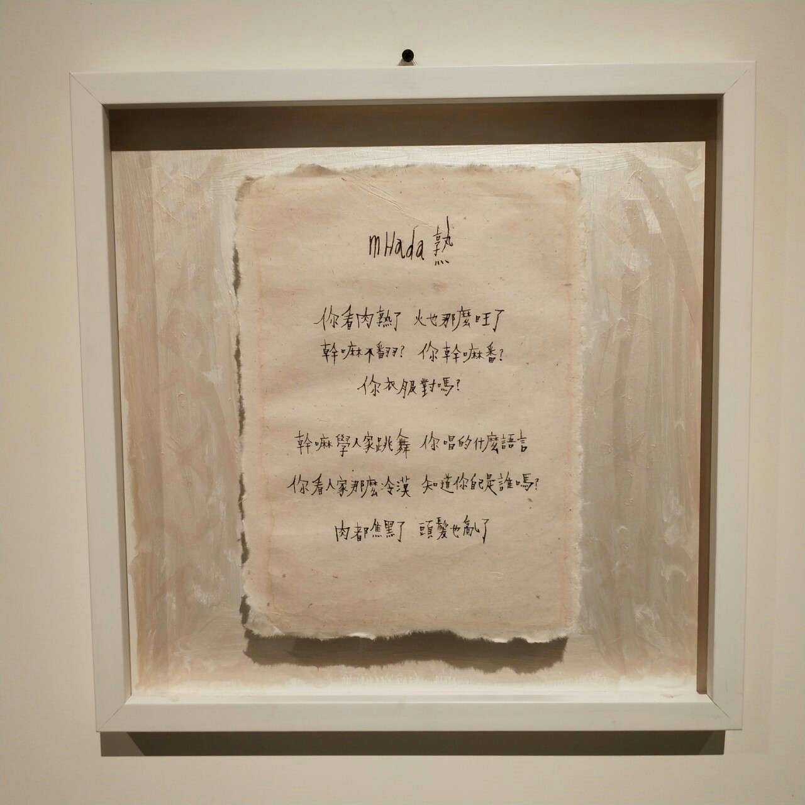
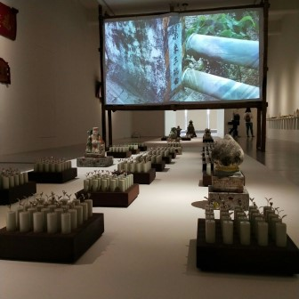

首頁
通識課程
通識活動
日日新
 
<
>
中原大學針對現代學生知識「偏狹化」、「單面向化」的趨勢，將通識教育定位為「全人化的通識教育」，從「博雅教育」、「現代公民教育」、「生命教育」以及「專業素養教育」等面向，設計教育內容，旨在培育敬業樂群、通達博雅，「有信」、「有望」、「有愛」的現代公民，並透過「通識課程」、「通識活動」以及「情境教育」等方式全方面實施。
觀看影片

通識課程
通識課程，共分為「天、人、物、我」四大學類，期盼通過以上四類課程薰陶的學生，都能達到「通達天人，識博物我，中而不偏，心是活水」的美麗境界。。

通識活動
通識活動，中原通識活動不但對師生共同成長有重大的正面助益，並融合人文與人本的情懷於宗教信仰的虔誠之中，敬天畏人，踐履篤實。

日日新
日日新，中原大學為持續提升「教與學」品質的理念，「日日新工作坊」提供各類演講及活動擴散樂學園營造讓，讓學生可以展現自我特色並以學為樂